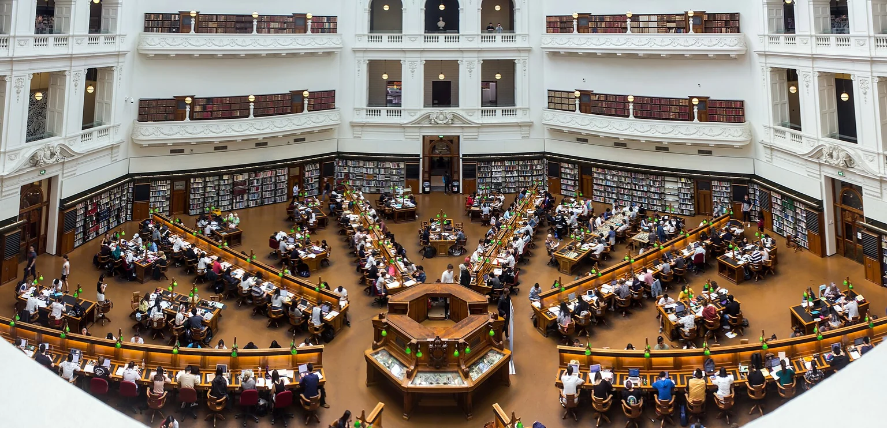

Explore the place
Follow the indoor-area evidence, available plans and questions a current survey can answer.
Explore →
Aura of Intelligence · A fair go in the age of intelligence
An Aura of Intelligence establishment: shared spaces, practical learning and useful overlap, around the clock.
Working exploration · Brisbane · 7 November 2026
AI-generated concept of an adapted Australian civic learning and enterprise space.
Image credit ↗The invitation
An Aura civic establishment brings learning, enterprise, creative work, community contribution and practical support into a shared physical setting.
A room can host a teaching session, a project team, an evening workshop and focused work at different times. Equipment, expertise and relationships can serve several purposes. The people using the place help shape what belongs together.
This exploration begins with 433 Logan Road, Stones Corner as a candidate location. Its actual room layout and operating arrangements will determine the combinations it can support.
Examine the place and its evidence →
A possible daily rhythm
Round-the-clock access creates room for different lives and schedules. Each service chooses its hours, people and support arrangements.
Bookable teaching rooms, mentor conversations, personal-Aura introductions and shared desks. Each activity brings an identified host and a workable handover.
Choose your way in
Follow the indoor-area evidence, available plans and questions a current survey can answer.
Explore →Select activities and see which rooms, equipment and support could be shared.
Explore →Change space, opening hours, attendance, staffing and contributions. Save a scenario to discuss.
Explore →Shared capability, personal authority
A shared establishment can support many organisations and many personal journeys. Its common assets create opportunities for people to learn, contribute and choose.
The operating direction includes KYC: knowing who is entering a shared facility. Identity verification, activity permissions, room bookings and personal-data sharing each have their own purpose.
Explore the access model →A Brisbane hub could connect with Dunwich and Minjerribah, Ready SET Co-op, 500 Queens, teaching, resilience and other locally shaped projects. The wider body of work remains open to many locations and combinations.
Follow the connected projects →